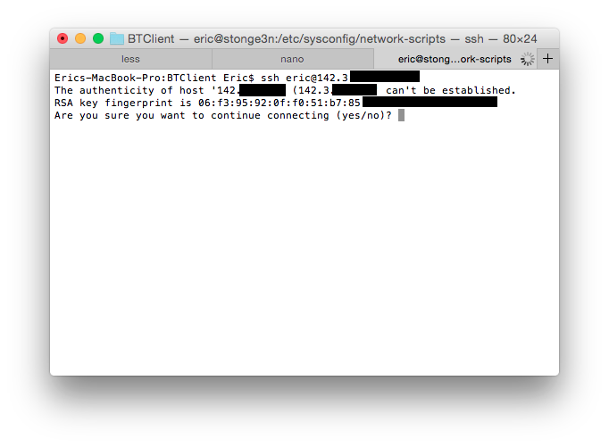
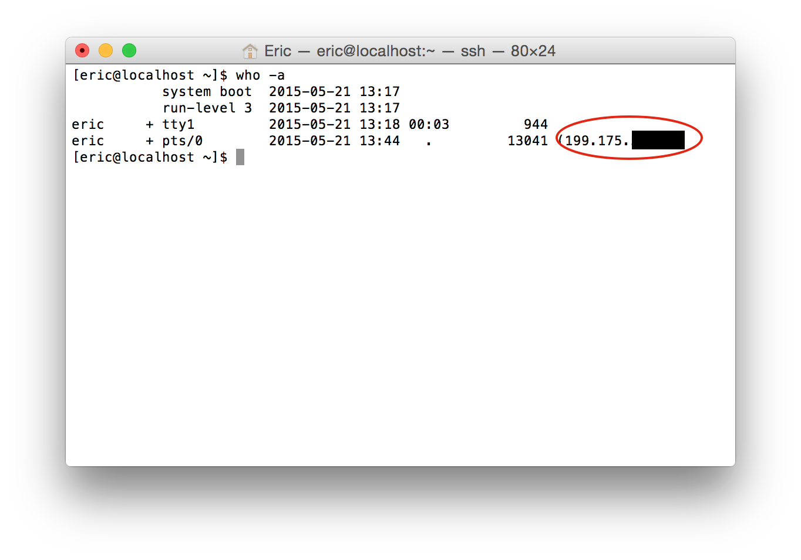

The third exercise assigned for the second lab was to ensure you are able to remotely access your machine.
Requirements
The requirements for remote access are:
- Completion of the connect to internet exercise.
- Another machine that has internet access. (Preferable a UNIX machine)
- Public ip address of your machine, found in the internet connection exercise.
Remote Access
To test for remote access the following steps were taken:
- On the other (remote) machine issue the command as follows:
$ ssh <your username>@<your public ip address> - When prompted accept the RSA fingerprint of the unknown machine, accept it. 
- Enter your password when prompted.
You should now have remote access to your machine. You can check at any time who is logged into your machine, either locally or remote, with the following command:
$ who -a